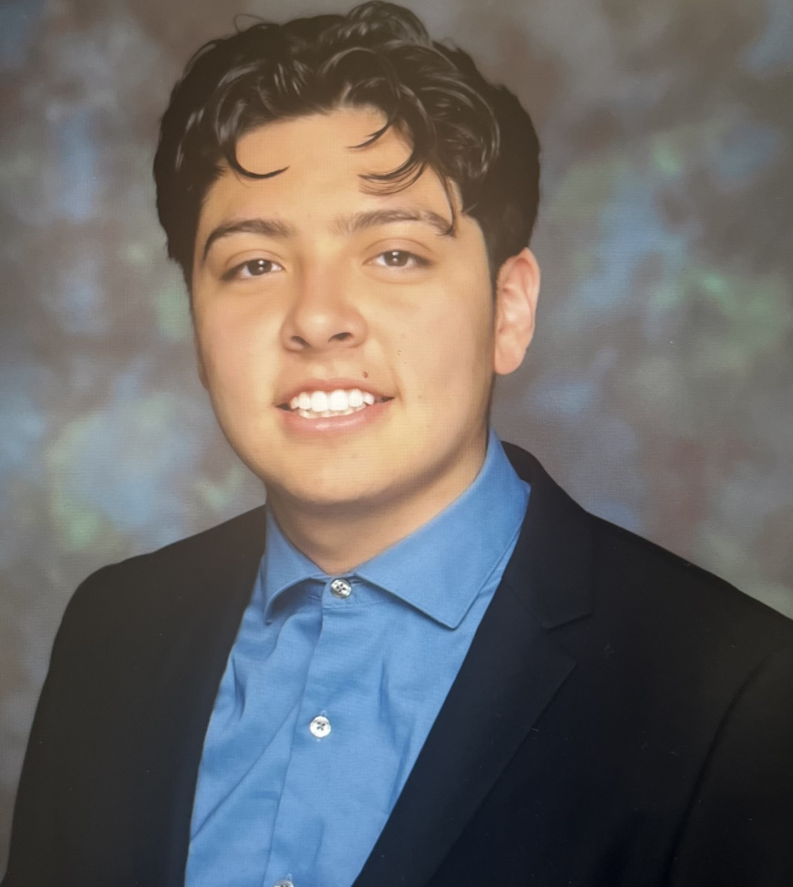

Future-Ready Electrical Engineer
I am a rising fourth year Electrical Engineering student at UCLA. When I first arrived on campus, I had no prior experience in engineering. I did not know how to code, build a circuit, or even read a schematic. But I brought with me a strong work ethic and a deep curiosity. I committed myself to learning by doing. I taught myself how to wire circuits, debug problems, and explore hardware through trial and error. Over time, I built a strong technical foundation and gained experience across circuits, embedded systems, coding, and user-facing projects. What I enjoy most is bringing ideas to life. Whether it’s soldering by hand or troubleshooting a full prototype, the challenge of making something work excites me.
My experiences have been diverse. I have worked on both solo and collaborative efforts, applying myself to a wide range of tools and technologies. I enjoy learning across fields and would love the opportunity to either continue growing broadly or dive deeper into one area. Regardless of the direction, my motivation always comes from a genuine love for building and learning. Outside the lab, I return home to Los Banos where I coach kids in basketball and swimming. Guiding young athletes has shown me how powerful mentorship can be and how growth, in any form, starts with belief and effort. This same philosophy shapes how I approach engineering and how I hope to support others in the field.
I want to make engineering accessible, especially for students who may not have early exposure to it. I am proud of how far I have come, not just in technical skill, but in confidence, communication, and leadership. I believe the best engineers are driven not only by knowledge but by a mindset that embraces uncertainty, creativity, and collaboration. Whether I am mentoring a teammate, building something new, or pushing through a difficult challenge, I carry the same goal: to grow, and help others grow too. I am excited for what comes next.
As I look toward the future, I am seeking an environment where I can continue to work hands-on, learn from experienced engineers, and contribute to meaningful projects that have real-world impact. I value companies that support personal development, encourage collaboration, and challenge their teams to think critically. I am ready to bring my passion, work ethic, and adaptability to the next chapter of my journey, and I am eager to learn from those around me while making a difference.